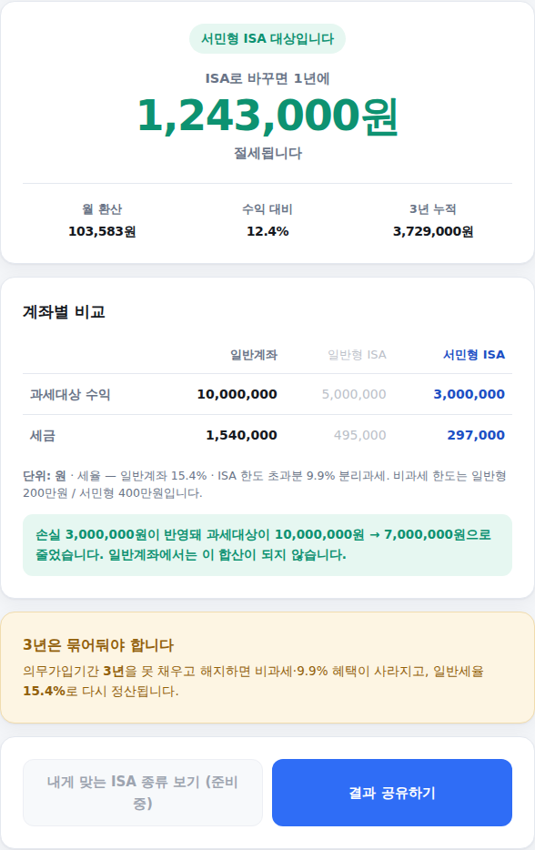

ISA(개인종합자산관리계좌)가 세금을 아껴준다는 건 다들 아는데, "정확히 나는 얼마를 아끼는지"까지 알려주는 곳은 드뭅니다. 소득과 예상 투자수익만 넣으면 바로 답이 나오는 계산기를 만들었습니다. 쓰는 법은 아래와 같습니다.
-
올해 투자수익 입력
화면 맨 위에서 올해 예상되는 이자·배당·매매차익 합계를 넣습니다. 300만 / 500만 / 1,000만 / 2,000만원 버튼을 눌러 대략 맞춰도 되고, 정확한 금액을 직접 입력해도 됩니다.
여기서 헷갈리기 쉬운 부분이 있습니다. 넣을 돈(납입액)이 아니라 벌 돈(수익)을 입력해야 합니다. 세금은 원금이 아니라 수익에 붙기 때문입니다.
투자수익 입력 화면
-
소득 유형 확인
근로소득만 있는지, 사업·기타소득이 있는지 고릅니다. 그러면 화면에 맞는 기준 금액이 나타납니다 — 근로소득자는 총급여 5,000만원, 사업·기타소득자는 종합소득금액 3,800만원입니다. 이 기준 이하면 서민형, 넘으면 일반형으로 자동 판정됩니다.
서민형은 비과세 한도가 400만원으로, 일반형(200만원)의 두 배입니다. 고르는 게 아니라 소득에 따라 정해지는 것이라, 계산기가 알아서 판단합니다.
소득 유형 선택 화면
-
해당되는 경우만, 추가 입력
"해당되면 열어보세요" 부분은 대부분의 경우 건드리지 않아도 됩니다. 다만 아래 둘 중 하나에 해당하면 펼쳐서 입력해 주세요.
- 금융소득이 연 2,000만원을 넘은 적이 있다면 — 이 경우 ISA 가입 자체가 제한되기 때문에, 계산기가 절세액 대신 안내 문구를 보여줍니다.
- 손실이 난 종목이 있다면 — 손실 금액을 넣으면 손익통산이 반영됩니다. ISA는 계좌 안의 이익과 손실을 합쳐서 순이익에만 과세하기 때문에, 손실이 있을수록 일반계좌 대비 절세액이 커집니다. 이 차이가 생각보다 큽니다.
펼쳐진 고급 옵션 화면
-
결과 확인
입력하는 즉시 아래에 결과가 갱신됩니다. 계산 버튼을 누를 필요가 없습니다.
- 연간 절세액
- 월 기준으로 환산하면 얼마인지
- 3년(의무가입기간) 유지 시 누적 절세액
- 일반계좌 / 일반형 ISA / 서민형 ISA 세금 비교표
3년을 채우지 못하고 중도해지하면 혜택이 사라지고 일반계좌와 같은 15.4%로 정산된다는 점도 함께 표시됩니다. 여유자금으로만 넣으셔야 하는 이유입니다.

최종 결과 화면
계산은 참고용이며 투자 조언이 아닙니다. 계산 기준은 조세특례제한법 제91조의18(2026년 8월 확정 기준)이며, 정확한 금액은 가입하실 은행·증권사에서 다시 확인해 주세요.